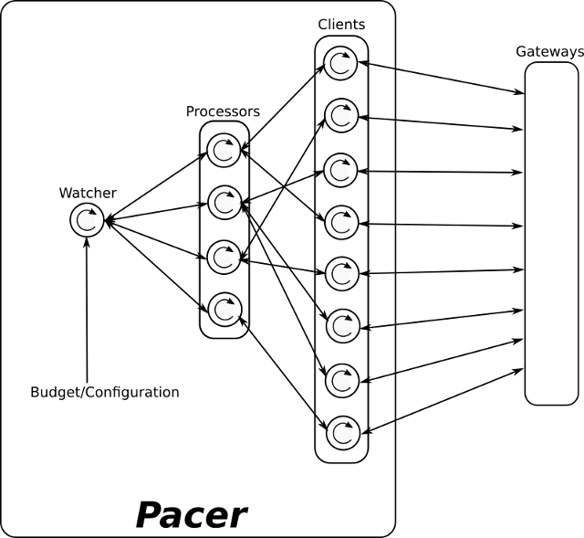
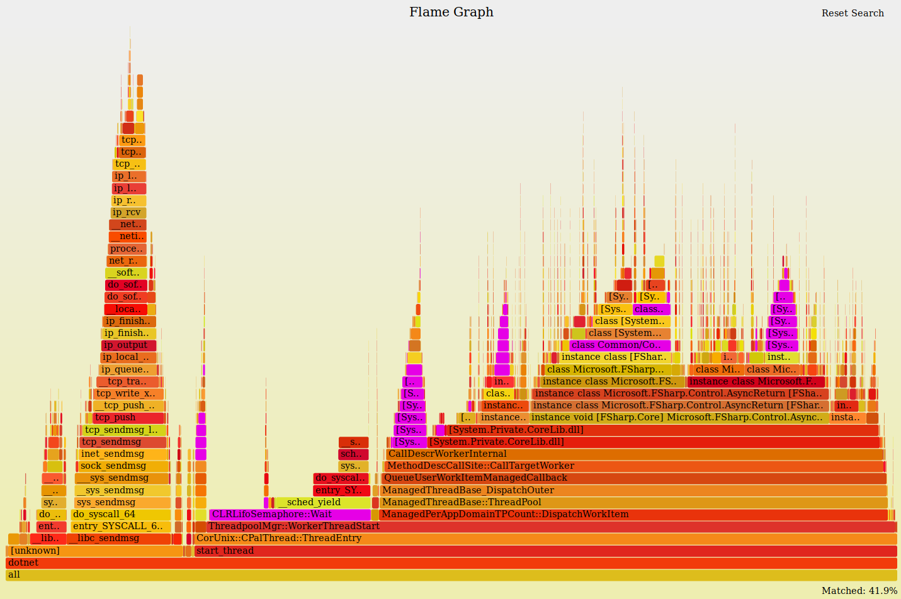
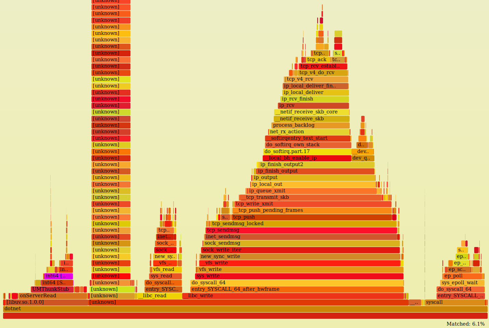

Disclaimer: Opinions are my own.
Warning: This is an engineering war story...
I work at Samsung Ads / Adgear, an online advertising platform and exchange serving ads across browsers, mobile devices, and smart TVs.
A typical pacer node in our system handles up to a million requests per second. One of the primary engineering objectives was making it scale cleanly across multiple cores and network interfaces.
I set out to rewrite the pacer in F# / CoreCLR because of the strong guarantees it offered: a solid type system, units of measure, high-quality tooling, and an asynchronous actor-based framework. The surprise was discovering that the CoreFX asynchronous socket framework on Linux was lagging behind in raw throughput. The ultimate solution was marshaling calls from F# to libuv in C11, achieving 5+ million bid requests per second on 16 threads with sub-2ms response time.
1. The Problem Space: Digital Advertising Exchanges
In the worst case, 5,000,000 bid requests per second (over 500k packets) hammer a single node, each needing to be evaluated and answered in less than 2 milliseconds. The physical machine was a 40 (virtual) core Linux server with dual Gigabit Ethernet interfaces.
The system must make near-instant decisions on whether to spend money or not to show an impression. The bidding heuristics must be rock solid; a single misbehaving node can overspend and trigger massive financial losses.
When you load a webpage or open an app on your smart TV, an ad placement triggers a request to an exchange. The platform runs a second-price auction, fanning out queries to bidders. Depending on proximity to the exchange, the decision window is typically ~20ms within a 120ms round trip. At the very end of the pipeline sits a critical service: The Pacer.
2. The Pacer: Governing Campaign Budgets
The pacer microservice acts as the police officer at the end of the line. Its sole duty is ensuring no advertising campaign exceeds its budget and pacing delivery smoothly over the lifetime of the campaign.
Atomics Will Explode
The original pacer was written in C using libck for lock-free data structures. Lock-free programming relies heavily on atomic operations to ensure at least one thread always makes progress.
The original single-core C engine could handle 1M requests/s, but background budget updates (arriving every few minutes) mutated shared state concurrently. If update order diverged, overspending occurred.
To eliminate this, I sought a language with:
- Purity & Determinism: The same input must produce the identical output, vastly simplifying unit tests.
- Units of Measure: Preventing insidious bugs like bidding in cents instead of dollars at compile time.
- Immutability by Default: Guaranteeing no thread mutates state out from under another.
After evaluating Rust (whose compiler times and ecosystem were immature back then), Haskell (hard-to-predict laziness), and OCaml (native debugger limitations), F# on CoreCLR became the ideal functional candidate.
3. Actor Architecture with MailboxProcessors
To avoid shared-variable synchronization bugs, we adopted an actor-based architecture using F#'s native MailboxProcessor:

- Client Actor: Represents a connection to the external gateway node.
- Processor Actor: Evaluates pacing heuristics on each incoming bid request and responds.
- Watcher Actor: Monitors budget and campaign configuration changes, broadcasting state updates to processors.
4. The Bottleneck: Profiling CoreFX Sockets
Initial benchmarks showed disappointing throughput: the system plateaued at around 320k requests/sec across all 40 cores.
Using perf and Brendan Gregg's flamegraphs on Linux:
$ sudo ./perfcollect collect session -pid <pid>
$ sudo perf script -f | FlameGraph/stackcollapse-perf.pl | FlameGraph/flamegraph.pl > flamegraph.svg

Profiling revealed:
- 18.1% spent in
CLRLifoSemaphore::Wait. - 11.35% parsing requests, with 7% in
JIT_NewArr1allocating transient strings for pattern matching. - 10.51% inside
System.Net.Sockets.dll.
Under the hood, CoreFX's Linux epoll loop ran on a single thread, dishing events off to worker tasks through thread pool semaphores. This induced massive thread hopping and contention.
5. The Breakthrough: Marrying F# with libuv in C11
Rather than rewriting the entire business logic, I opted for targeted low-level interop: writing a ~900 line C11 network layer using libuv.
We dedicated 16 cores out of 40 strictly to networking, running 16 isolated uv_loop event loops (one per thread). Each loop parses the wire protocol in zero-allocation C11 and invokes pre-marshaled F# delegate callbacks for pacing decisions.

6. Lessons Learned
- Architecture Over Cleverness: Lock-free data structures often trade debugging sanity and portability for minimal actual throughput gains. Clean shared-nothing actor designs with message passing are vastly superior.
- Pragmatic Polyglot Systems: F# provided immaculate type-safety and domain expressiveness for pacing heuristics, while C11 + libuv provided raw socket saturation on Linux.
- Measure, Don't Guess: Flamegraphs and CPU counter profiling eliminate conjecture. Every architectural change was guided by empirical flame profiles.
References
- GitHub: eloraiby/fs-pacer — Repository and original essay
- GitHub: eloraiby/tcpm — Tiny Cooperative Process Manager in C11